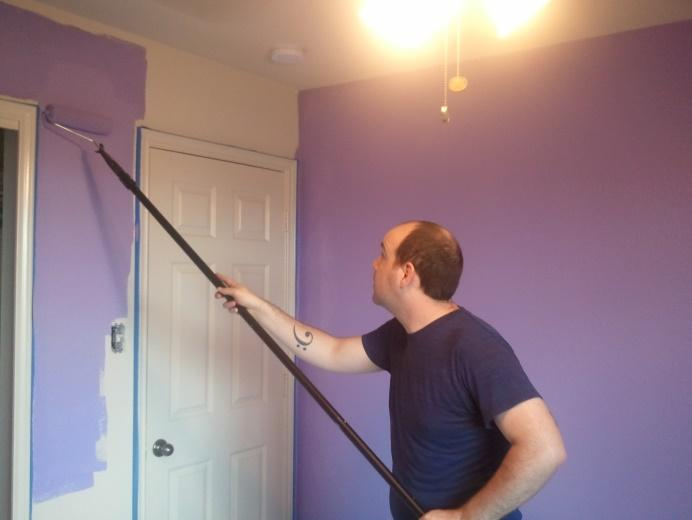
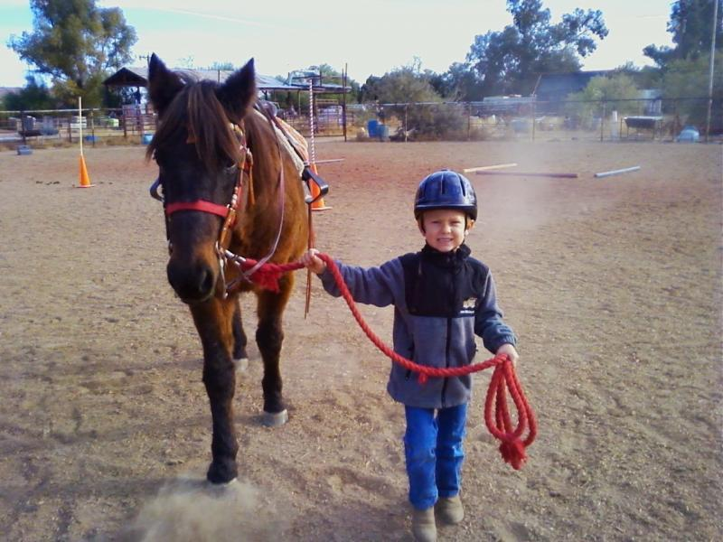
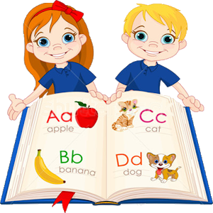
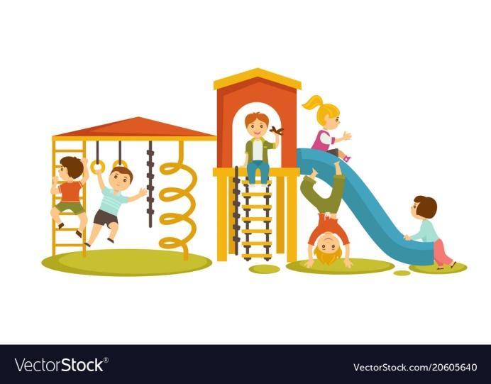

I. Put the verbs into the correct form (future simple tense will).
Tim, 16 years old, asked an ugly fortune teller about his future. Here is what she told him:
II. Look at the pictures and complete the sentences with the given words using “going to” future.
1

Từ gợi ý: My father/ paint the room purple.
Viết câu với “going to”:
2

Từ gợi ý: My brother/ ride a horse.
Viết câu với “going to”:
3

Từ gợi ý: I/ learn the English alphabet.
Viết câu với “going to”:
4
Từ gợi ý: You/ do exercise?
Viết câu với “going to”:
5
Từ gợi ý: They/ get married.
Viết câu với “going to”:
6
Từ gợi ý: I/ have a big breakfast.
Viết câu với “going to”:
7

Từ gợi ý: We/ have fun at the playground.
Viết câu với “going to”:
8
Từ gợi ý: Mickey/ play computer games.
Viết câu với “going to”:
III. Put the verbs in the brackets into the correct tense (the future simple ‘will’ or ‘going to’ future).
Test 1 – VII. Choose the options that best fit the blanks.
Test 1 – VIII. Decide whether the following sentences are Correct or Incorrect.
Test 1 – IX. Decide whether the following sentences are intention or prediction.
Test 1 – X. Provide the correct verbs in the form of "will" or "be going to" to fill in the blanks.
Test 1 – XI. Provide the correct verbs in the form of "will" or "be going to" to fill in the blanks.
Test 1 – XII. Choose from the given verbs to fill in each blank ("will" or "be going to"): put, leave, pick, give (x2), visit, get, turn.
Từ/cụm từ cho sẵn:putleavepickgivegivevisitgetturn